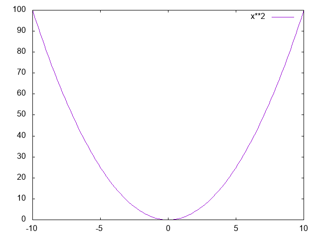
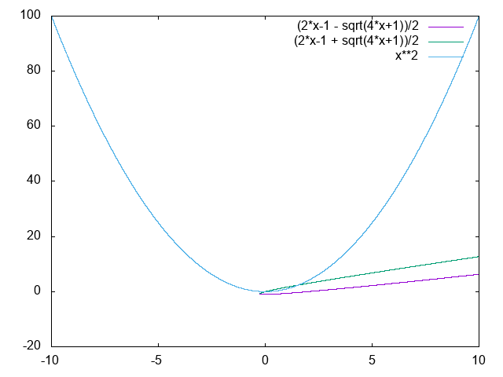

寫一寫發現這份作業如果不寫老師加題的話很和平，但是一寫老師加題的話就會變得暴力無比。真是辛苦助教惹
1.E2.1
在不拉負回授的狀況下，輸入r與輸出y的關係為：
$$y = r^{2}$$
把這個關係式稍微做一下圖的話，可以得到：
接著要拉unity feedback。稍微做一下transfer function
$$(r - y)^{2} = y$$
暴力解出\(y\)與\(r\)的關係：
$$r^{2} - 2ry + y^{2} = y$$
稍微整理一下：
$$y^{2} - (2r + 1)y + r^{2}= 0$$
因此：
$$y = \frac {(2r-1) \pm \sqrt{(2r+1)^{2}-4r^{2}}}{2} = \frac {(2r-1) \pm \sqrt{4r + 1}}{2} $$
將兩者與剛剛的圖形一起繪出，可以得到如下的結果：
後者看起來幾乎是直的線。所以可以發現在[0, 4]之內，有unity feedback比開路還要來的線性。
2. E2.25
(a)問0附近的現小信號模型長怎樣，所以就求各自的微分。在0處微分顯然是0，所以在[-0.5,0,5]：
$$v_{o} = 0$$
(b)問1附近的小信號模型，因為\(v^{'}_{o}(1) = 2 \cdot 1 = 2\)，而且過(1, 1)，所以[0.5, 1.5]的小信號模型是：
$$v_{o} = 2(v_{in} - 1) + 1$$
既然說了就要附真相圖。我這不就來了嗎：
3. P2.1
題目顯然出的有點問題。因為連\(i_{1}\)是流經\(R_{1}\)的電流，或是流經\(R_{2}\)的電流都沒講。我假定\(i_{1}\)是流經\(R_{2}\)電子的電流。
因為：
$$R \Rightarrow V = IR$$
$$L \Rightarrow V = I'L$$
$$C \Rightarrow V = \int I/Cdt$$
所以繞\(i_{1}\)一圈，根據KVL：
$$R_{1}(i_{1} + i_{2}) + \int (i_{1} + i_{2})/C_{1}dt + i_{1}^{\space '}L_{1} + i_{1}R_{2} = v(t)$$
針對\(i_{2}\)迴圈：
$$i_{1}^{\space '}L_{1} + i_{1}R_{2} = \int i_{2}/C_{2}dt + i_{2}R_{3} $$
這就是題目要的兇惡的integrodifferential equations了。真是
然後要求Transfer Function，策略是用把每個元件用s域阻抗計算，這時候就可以化為s域串並聯問題解決：
$$Z_{L} = V_{L}(s)/I_{L}(s) = sL$$
$$Z_{R} = V_{R}(s)/I_{R}(s) = R$$
$$Z_{C} = V_{C}(s)/I_{C}(s) = \frac {1} {sC}$$
首先計算兩\(R_{2}\)與\(R_{3}\)分支的阻抗\(Z_{2}\)、\(Z_{3}\)：
$$Z_{2} = sL_{1} + R_{2}$$
$$Z_{3} = R_{3} + \frac {1} {sC_{2}} = \frac {R_{3}C_{2}s + 1}{sC_{2}}$$
以及\(R_{1}\)部分組抗：
$$Z_{1} = R_{1} + \frac {1} {sC_{1}} = \frac {R_{1}C_{1}s + 1}{sC_{1}}$$
所以，整個電路其實就化為：
$$Z_{1} + (Z_{2} || Z_{3})$$
其中 + 表示串連，||表示並聯。由此可以計算出\(I_{2}(s)\)與\(V(s)\)的關係：
$$I_{1}(s) = \frac {V(s)} {Z_{1} + (Z_{2} || Z_{3})} \cdot \frac {Z_{2}} {Z_{2} + Z_{3}}$$
所以$$\frac {I_{1}(s)}{V(s)} = H(s) = \frac {1} {Z_{1} + (Z_{2} || Z_{3})} \cdot \frac {Z_{2}} {Z_{1} + Z_{2}} = \frac {1} {Z_{1} + \frac{Z_{2}Z_{3}}{Z_{2} + Z_{3}}} \cdot \frac {Z_{2}} {Z_{1} + Z_{2}}$$
然後把\(Z_{1}, Z_{2},Z_{2}\)暴力帶入就可以了。不過這不管怎麼看都很痛苦。為了助教與我自己的健康，我選擇相信編譯器長樹常數折疊的能力。
4. P2.2
對於\(M_{1}\)： $$ M_{1} \ddot{y_{1}} + ky_{1} + b\dot{y_{1}} + k_{12}(y_{1} - y_{2})= F + M_{1}g $$ 取Laplace Transform： $$M_{1} s^{2}Y_{1} + kY_{1} + bsY_{1} + k_{12}(Y_{1} - Y_{2})= F(s) + \frac{M_{1}g}{s}$$ 化簡一下，得到： $$[M_{1}s^{3} + bs^{2} + (k + k_{12})s]Y_{1} + [-k_{12}s]Y_{2} = sF(s) + M_{1}g$$ 對於\(M_{2}\)： $$- k_{12}(y_{2} - y_{1}) - M_{2}g= M_{2}\ddot{y}_{2}$$ 取Laplace： $$ - k_{12}Y_{2} + k_{12}Y_{1} - \frac {M_{2}g}{s} = M_{2}s^{2}Y_{2}$$ 化簡一下，得到： $$- k_{12}sY_{1} + [M_{2}s^{3} + k_{12}s]Y_{2} = M_{2}g$$ 然後看看剛剛得到的： $$[M_{1}s^{3} + bs^{2} + (k + k_{12})s]Y_{1} + [-k_{12}s]Y_{2} = sF(s) + M_{1}g$$ 我真希望此時此刻我有一個可以化簡symbol的程式可以用。下次我一定要好好尋找這種工具。 用克拉瑪公式解\(Y_{2}\)： $$\Delta = [M_{1}s^{3} + bs^{2} + (k + k_{12})s][M_{2}s^{3} + k_{12}s] + [k_{12}s][k_{12}s]$$ $$\Delta_{Y_{2}} = [M_{1}s^{3} + bs^{2} + (k + k_{12})s][M_{2}g] - [sF(s) + M_{1}g][k_{12}s]$$ 因此Transfer Function 為： $$\frac {[M_{1}s^{3} + bs^{2} + (k + k_{12})s][M_{2}g] - [sF(s) + M_{1}g][k_{12}s]} {[M_{1}s^{3} + bs^{2} + (k + k_{12})s][M_{2}s^{3} + k_{12}s] + [k_{12}s][k_{12}s]}$$
5. P2.3
對於左邊的質量：
$$F - kx_{1} + k(x_{2} - x_{1}) = M\ddot{x_{1}}$$ $$M\ddot{x_{1}} + 2kx_{1} - kx_{2} = F$$
對於右邊的質量：
$$-k(x_{2} - x_{1}) -b\dot{x_{2}} = M\ddot{x_{2}}$$ $$M\ddot{x_{2}} + b\dot{x_{2}} + kx_{2} - kx_{1} = 0$$
接著對二式做Laplace： $$Ms^{2}X_{1} + 2kX_{1} - kX_{2} = F(s)$$ $$Ms^{2}X_{2} + bsX_{2} + kX_{2} - kX_{1} = 0$$ 稍作化簡，得到： $$(Ms^{2} + 2k)X_{1} - kX_{2} = F(s)$$ $$(Ms^{2} + bs + k)X_{2} - kX_{1} = 0$$ 由下式可得： $$X_{1} = \frac {Ms^{2} + bs + k}{k} X_{2}$$ 帶入上式得： $$(Ms^{2} + 2k)(\frac {Ms^{2} + bs + k}{k}) X_{2} - kX_{2} = F(s)$$ 稍作化簡： $$ (Ms^{2} + 2k)(\frac {Ms^{2} + bs + k}{k}) X_{2} - kX_{2} = X_{2} [ s^{4}(\frac {M^{2}}{k}) + s^{3}(\frac {Mb}{k}) + s^{2}(3M) + s(2b) + (k) ] = F(s) $$ 因此： $$\frac {X_{2}}{F(s)} = \frac {k} { M^{2}s^{4} + Mbs^{3} + 3kMs^{2} + 2kbs + k^{2} } $$ 後記：本來想用能量守恆 + 暴力微分求出governing equation。但後來發現是自虐的做法。發現好多自己覺得很猛的招最後都吃屎，嗚嗚～
6. P2.13
第一眼看過去，發現大部分都可以沿用s域阻抗處理。所以就碾壓過去：
$$I_{f} = \frac {V_{f}}{R_{f} + sL_{f}} \Rightarrow V_{g} = \frac {K_{g}}{R_{f} + sL_{f}}V_{f}$$
接著求\(I_{g}\)
$$I_{g} = \frac{K_{g}V_{f}}{[s(L_{g} + L_{f}) + (R_{g} + R_{f})][R_{f} + sL_{f}]}$$
所以 $$T_{M} = K_{m}I_{g} = \frac{K_{g}K_{m}V_{f}}{[s(L_{g} + L_{f}) + (R_{g} + R_{f})][R_{f} + sL_{f}]}$$ 其實我不知道為什麼是這個關係。不過我還是用了。最後找出力矩與角速度的關係式，只要跟阻尼震盪做點類比就可以求出： $$T_{L} = (s^{2}J_{L} + sb_{L}){\Theta}_{L}$$ $$T_{M} = (s^{2}J_{m} + sb_{m}){\Theta}_{m} + T_{L} \frac {N_{1}}{N_{2}}= (s^{2}J_{m} + sb_{m}){\Theta}_{m} + (s^{2}J_{L} + sb_{L}){\Theta}_{L}n$$ 因為他要問\(\theta_{L}\)的Transfer Function，所以讓他開心： $$\theta_{M}N_{1} = \theta_{L}N_{2} \Rightarrow \theta_{M} = \frac {1}{n}\theta_{L}$$ 所以 $$T_{m} = (s^{2}J_{m} + sb_{m})\frac {1}{n}\Theta_{L} + (s^{2}J_{L} + sb_{L}){\Theta}_{L}n = \frac{K_{g}K_{m}V_{f}}{[s(L_{g} + L_{f}) + (R_{g} + R_{f})][R_{f} + sL_{f}]}$$ 因此: $$ \frac {\Theta_{L}}{V_{f}} = \frac { K_{g}K_{m} }{ [(s^{2}J_{m} + sb_{m})\frac {1}{n} + (s^{2}J_{L} + sb_{L})n] [s(L_{g} + L_{f}) + (R_{g} + R_{f})][R_{f} + sL_{f}] } $$ 一天又平安的過去了，感謝Trandfer Function的努力。